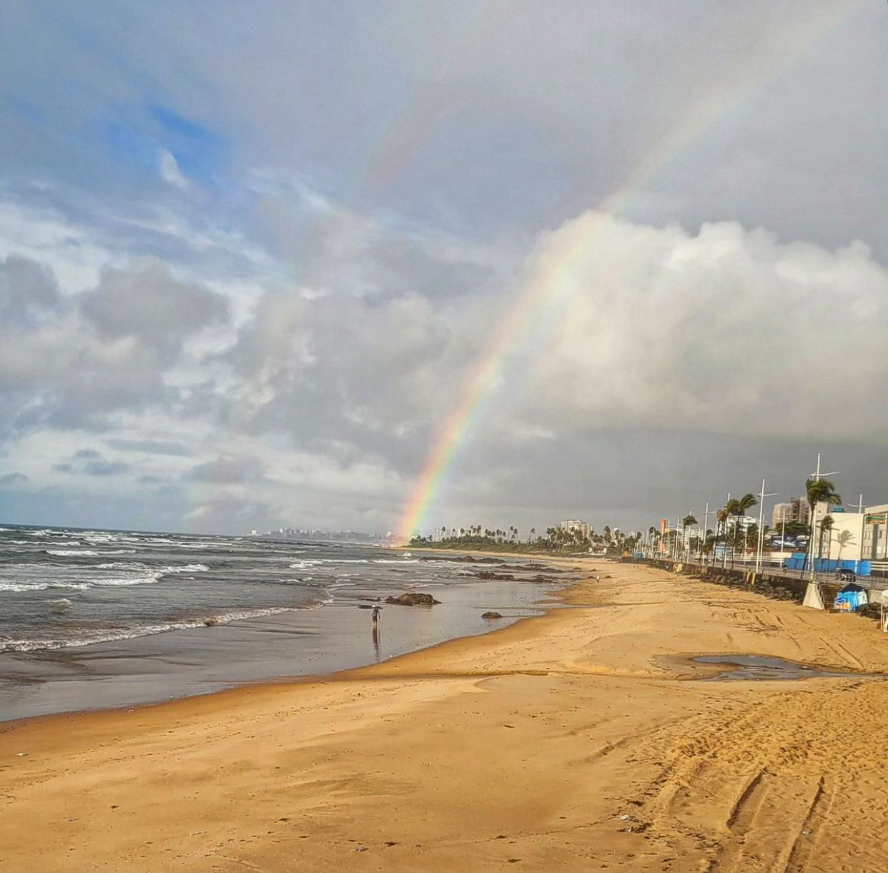
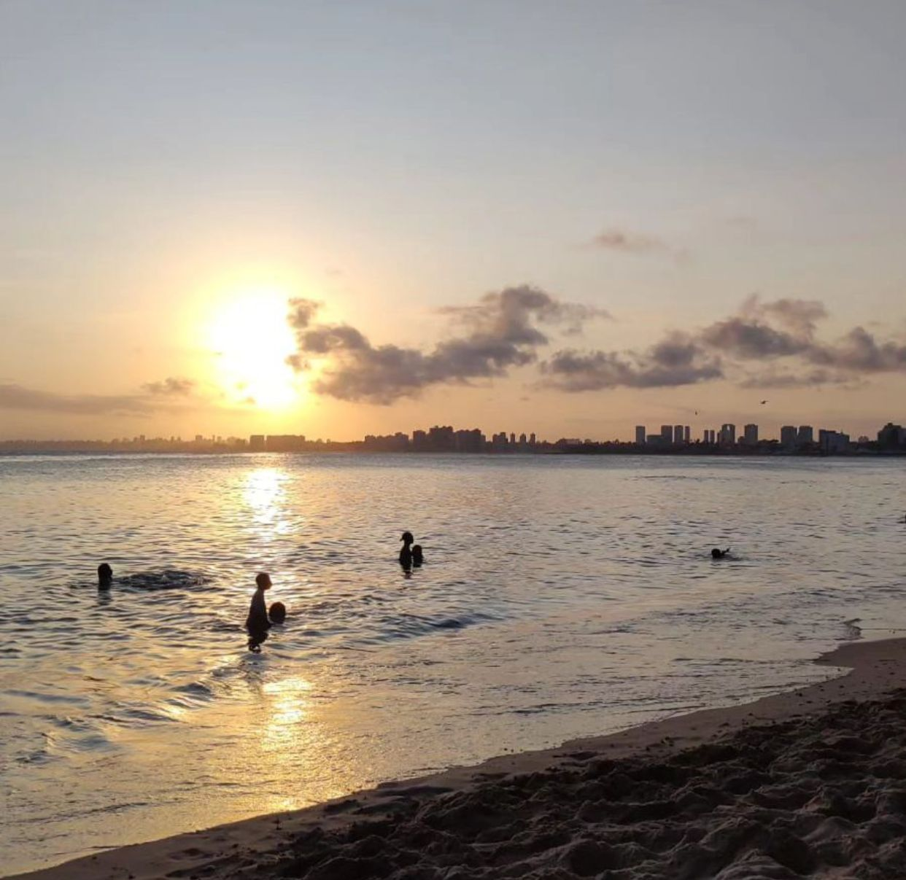

Cerca de 71% da superfície do planeta é ocupada por oceanos. Os
oceanos constituem o maior repositório de organismos do planeta.
Além disso, a vida marítima fornece aos seres vivos mais da
metade do oxigênio que respiramos, tendo assim um papel de suma
importância da água e no sistema climático.
Você imagina o que aconteceria caso todos os oceanos do mundo fossem
contaminados e comprometidos? Exatamente, não haveria vida no mundo.
Visto a importãncia da água no nosso planeta, conseguimos
compreender quais tipos de ações devemos tomar a fim de evitar a
poluição entre outros fatores que
podem impactar negativamente no meio ambiente e quais são os projetos
existentes para combater esse problema. Visando combater a poluição e
a extinção dos animais,
propúnhamos algumas ações humanitárias que podem ser tomadas para
auxiliar a manter o oceano vivo.

A vida marítima.
As vidas marítimas em nosso mundo se encontra em uma situação cada vez
mais complicada, correndo o risco de extinção de algumas espécies de
animais,
poluição do mar/rio/oceano entre outras ameaças graves.
De acordo com a ODS, 40% dos oceanos se encontram afetados por
atividades humanas, como poluição e pesca predatória, ocasionando a
perda de habitat e a degradação
do oceano, visto que nossos lixos acabam auxiliando na degradação.
Visando a melhoria de qualidade na água, é de suma importância
realizar projetos de limpeza e incentivar a troca de salocas plásticas
por ECOBAGS,
caixas de papelão e sacos de papel, reduzindo a contaminação da água e
o falecimento das vidas marítimas, além de ações sociais de limpeza do
oceano,
juntando e reciclando os lixos que são jogados na água, que chega a
4,5 toneladas de lixos que são deixados na praia em um dia.
A vida humana se torna possível devido aos oceanos, por causa do
fornecimento de energia, turismo, transporte, provisão de segurança
alimentar dentre outras.

A contaminação do meio ambiente.
A contaminação do meio ambiente está bastante comprometida, onde o
ecossistemas vêm recebendo uma carga constante de substâncias
químicas, orgânicas e inorgânicas.
As atividades humanas são as responsáveis pelo maior declínio da
diversidade biológica, onde é estimado uma aceleração de espécies
extintas entre 1000 vezes a 10000 vezes.
A poluição das águas pode causar diversos problemas ambientais, e
abaixo trouxemos algumas ações necessárias para minimizar a
consequência das ações humanas.
Diminuir o consumo de sacolas plásticas
Colocar os lixos corretamente de acordo com as lixeiras seletivas
Não jogar lixo na rua/mar/oceano
Reduzir o consumo de peixes em extinção
Reaproveitar o óleo de cozinha
Conclusão.
O objetivo inicial deste projeto era reduzir a poluição das águas e
realizar a conscientização desse assunto para a sociedade,explicando a
respeito do que pode causar a poluição
e o falecimento dos seres vivos marítimos e como podemos evitar
maiores problemas, que foi alcançado com total êxito. Nas próximas
etapas do projeto, visamos incluir cada
vez mais pessoas para nos auxiliar a continuar aperfeiçoando esse
planejamento, para que juntos consigamos salvar as nossas praias e
principalmente, conservar as vidas marítimas
que habitam nas águas.
Conforme a imagem abaixo, é possível verificar como é bom poder
usufruir das águas das praias da maneira correta.